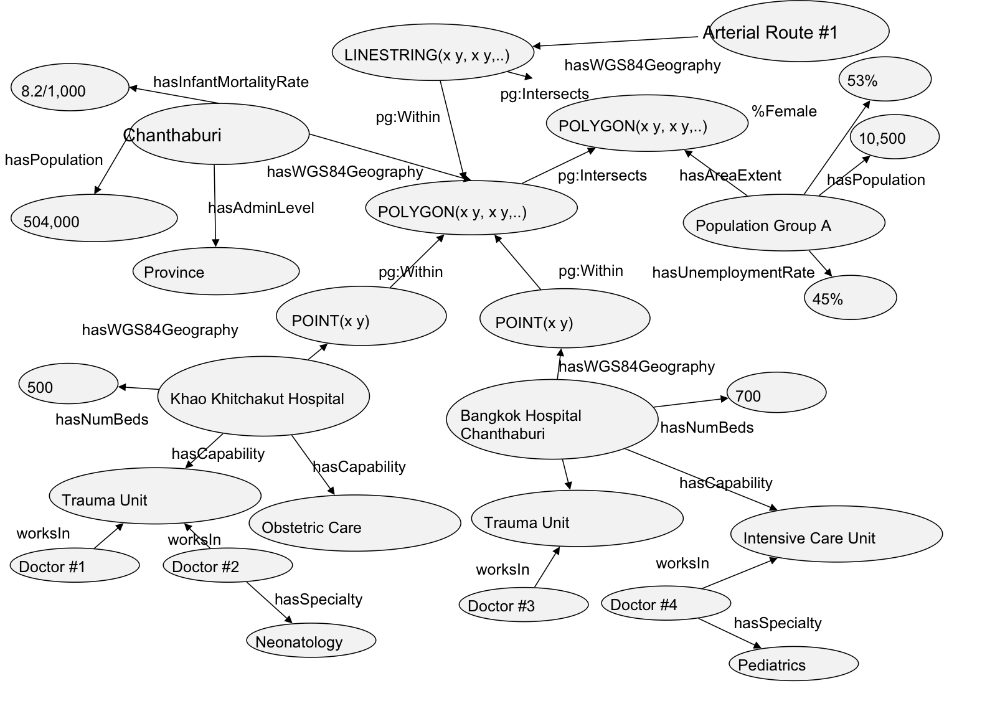
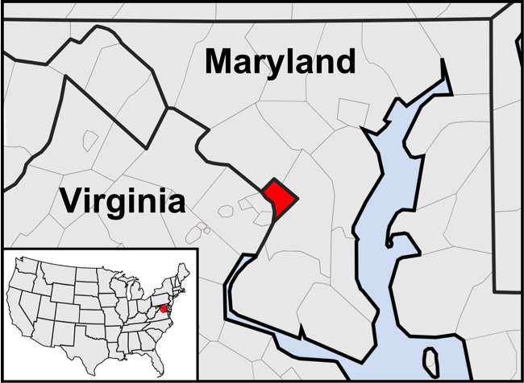

The Feasibility of Interoperability in the Humanitarian Domain
AAAI Spring Symposium 2015
Structured Data for Humanitarian Technology #SD4HumTech
| @timothylclark | @hemant_pt | @carstenkessler |
The Main Problem
Seamless interoperability still eludes the humanitarian and crisis response communities
Standards for syntax are in use, but semantics are more difficult
Focus of this session
Scope of the problem: is it really overkill?
Syntactic measures to adress interoperability
Data structures that capture semantics and context
Scalable platforms and architectures
Organizational roles and responsibilities
Two ways of looking at the humanitarian world
Closed World Assumption
|
Open World Assumption
|
Syntactic Interoperability

|
... |
Vocabularies and Ontologies
Human and machine understanding of context
- HXL and MOAC
- PROV-O
- schema.org
- disease-ontology.org
Machine Reasoning
Hurricane_Boris hasImpactAreaGeometry [WKT polygon of hurricane track and impact areas]
Fairfax_VA hasGeometry [WKT polygon of county boundaries]
Fairfax_VA hasPopulation Pop_A
Pop_A hasResiliencyMeasure ‘‘Low’’
Through a combination of logical rules, we can infer:
Hurricane_Boris affects Pop_A
Towards a Humanitarian Knowledge Graph
Query expansion for humanitarian operations:
“What are the immediate humanitarian needs in Tacloban?”
Linked Data
Cool icon courtesy of ASOM-MENA.
Why do this?
- More sources of data and knowledge for the graph
- Leverage data sources that are not humanitarian, yet still relevant
- Data stays with the owner, but exposed for the community
Are we talking about the same thing?
- Using HTTP, dereferenceable URIs for generic, flexible publishing of self-describing data (vs documents)
- Allows us to refer to canonical representations (identity) of operationally-relevant things
|  |
Canonical <> The Only One... ...because of URI Aliases
What's your source?

Trust in source through cryptography
Trust that inferences/derived statements are being made using sound logic
Scalable Infrastructure and Platforms

|

|
... |
Barrier to use is lower than ever before
Organizational Roles and Responsibilities
Who should collect data?
Should we expect them to write to RDF stores?
Probably not.
Who should publish data?
Should we expect them to build RDF stores and maintain ontologies?
Maybe?
Who should own data?
Should we expect them to maintain part of the graph?
Maybe?
Next Steps
- Develop domain ontologies in earnest
- Conversion tools for first mile (new HXL?)
- Find trustworthy publisher organizations willing to take on hosting duties
- Build tools to hook into this large Humanitarian Knowlege Graph
The building blocks are there. We need to figure out how to combine them.
Thank you
| @timothylclark | @hemant_pt | @carstenkessler |